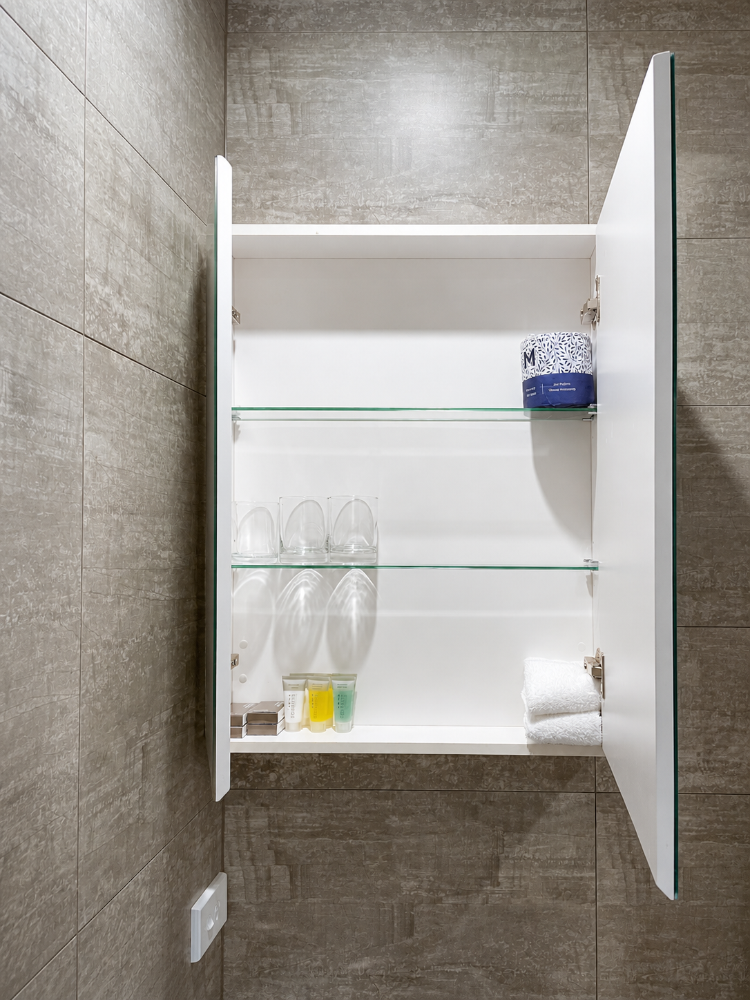
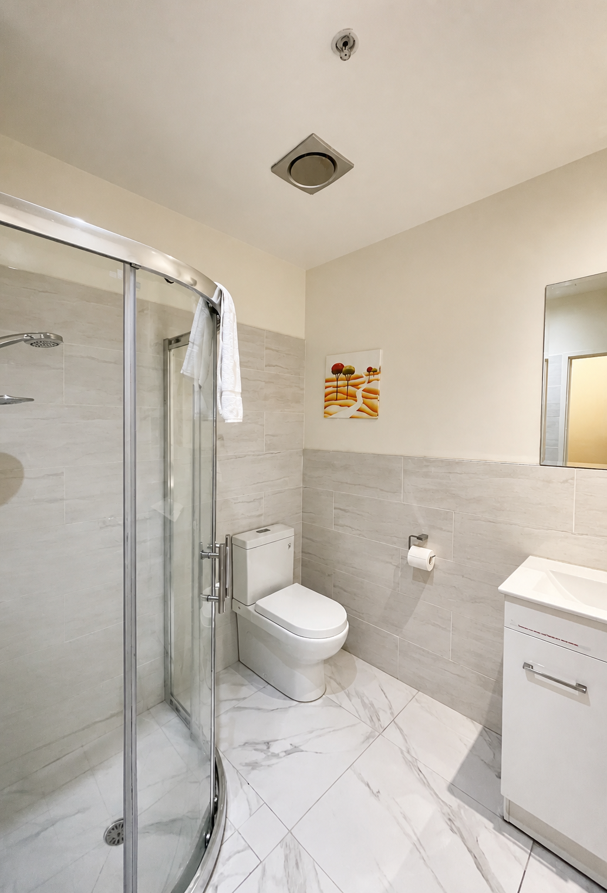
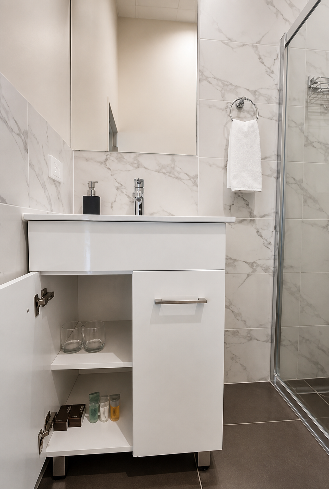

Private room · Maximum 3 guests
Deluxe Twin
A king bed and king single in one room, suited to friends who prefer separate beds or a small family staying together.
- Beds
- King + king single
- Size
- To be confirmed
- Guests
- 3
- View
- Varies by room







Room features
- King bed and king single
- Space for up to three guests
- Air conditioning
- Flat-screen television
- Minibar
- Free fibre Wi-Fi
Questions
Is this the family room?
It is the most flexible listed category for a small family, accommodating up to three guests.
Are the beds separate?
The room is listed with one king bed and one king single.
Book direct
Ready to stay?
Check your dates or call the front desk with questions.